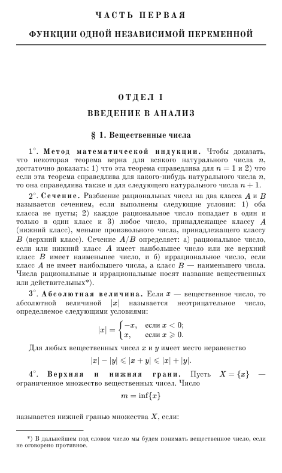

Mathematical analysis · Digital edition
B. P. DemidovichProblems and Exercises in Mathematical Analysis
The Russian calculus problem book, with selectable text, typeset formulas and easy navigation. Exercises, illustrations and answers in one PDF.
622 pages · 11 MB · version 1.0.0 · book language: Russian


Made for reading and studying
This OCR edition of Demidovich's problem book was rebuilt from recognized and reviewed transcriptions. Search and select text, then jump to a section using bookmarks or the linked table of contents.
- Mathematical expressions typeset with MathJax.
- Old Standard TT body type, restored headings and running headers.
- Illustrations and the answer section included.
- Printed page labels 7–624 preserved in the main text.
Topics in the book
- Introduction to analysis, limits and continuity
- Derivatives and differentials
- Indefinite integrals
- Definite integrals
- Numerical and functional series
- Functions of several variables
- Integrals depending on a parameter
- Multiple integrals and line integrals
About the file
How is this different from a scanned PDF?
It is a re-typeset document with selectable text and structural PDF tags. Its design follows the printed source, without reproducing every detail of the scan.
Why 622 pages?
Source pages 1–622 are included out of 625. The four introductory contents pages remain; the three duplicate contents pages at the end have been removed.
Can I copy mathematical formulas?
Mathematical symbols are selectable. Copying a complex expression does not guarantee its original two-dimensional layout or valid LaTeX. OCR ambiguities may remain; check uncertain formulas against the printed book.
Where are the source materials and corrections?
Files and transcription archives are in the GitHub repository. To report a mistake, open an issue with the page and exercise number. Release 1.0.0 includes a SHA-256 checksum.
I am not the author of the original book and do not claim authorship. This is a digitized and re-typeset version of B. P. Demidovich's Problems and Exercises in Mathematical Analysis. All rights to the original work belong to their respective holders.